П-2 · второй нажал «Взять» или решение
Анна уже взяла заявку. Игнат видит, кто решает, и может забрать.
 Заявку уже взял(а) Анна. Решает он(а) — или «Забрать себе».
Заявку уже взял(а) Анна. Решает он(а) — или «Забрать себе».K7M2Q9XR4T🔎 Ручной разбор · 6 мин · CB → xR · ub-1
| Клиент | 51234567 · 23 обмена |
| Принято | 100.00 CryptoBot |
| К выплате | 97.50 xRocket |
 Написать
Написать
Повторить выплатуП-2 · Анне, когда забрали
Отдельное сообщение — чтобы Анна не решала то, что уже не её.
Заявку K7M2Q9XR4T забрал(а) себе Игнат — решения теперь за ним(ней).П-3 · карточка у оператора, исход неясен
Повторить и вернуть при неясном исходе может только админ — кнопок нет, вместо них «Позвать админа».
K7M2Q9XR4T🔎 Ручной разбор · 6 мин · CB → xR · ub-1
| Клиент | 51234567 · 23 обмена |
| Принято | 100.00 CryptoBot |
| К выплате | 97.50 xRocket |
Исход выплаты неясен — решает админ. НаписатьП-3 · оператор нажал «Принял» на тревоге
Его копия затихла; у админов и владельца тревога продолжает повторяться, пока админ не примет.
 Нужен разбор · заявка №41 · CB → xR · 100.00 USDT
Нужен разбор · заявка №41 · CB → xR · 100.00 USDTПозвал(а) админа Олег · 03:12 — повторы для вас остановлены
 Открыть заявку
Открыть заявкуП-3 · админам и владельцу
Сразу, со звуком. Плюс обычные повторы тревоги, пока админ не нажмёт «Принял».
K7M2Q9XR4TЖдёт решения: неясный исход выплаты 97.50 xRocket.
Деньги клиента: в учёте, выплаты не было.
Открыть заявкуП-4 · сотрудник прислал ссылку на чек
Ссылка из заявки — сразу её карточка. Чек не открывается.
K7M2Q9XR4T — вот она.K7M2Q9XR4T🔎 Ручной разбор · 6 мин · CB → xR · ub-1
| Клиент | 51234567 · 23 обмена |
| Принято | 100.00 CryptoBot |
| К выплате | 97.50 xRocket |
НаписатьП-4 · такого чека в заявках нет
Как клиенту — только явной кнопкой: иначе деньги клиента уйдут сотруднику.
Такого чека в заявках нет.Как клиенту я его не открываю: деньги ушли бы вам. Обменять сами — кнопкой ниже.
П-4 · «Обменять как клиент»
Следующая ссылка уйдёт в обычный обмен — один раз, 2 минуты.
 Пришлите ссылку ещё раз — обменяю как клиенту. Действует 2 минуты, один раз.
Пришлите ссылку ещё раз — обменяю как клиенту. Действует 2 минуты, один раз.